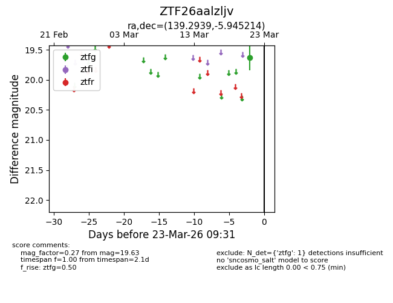
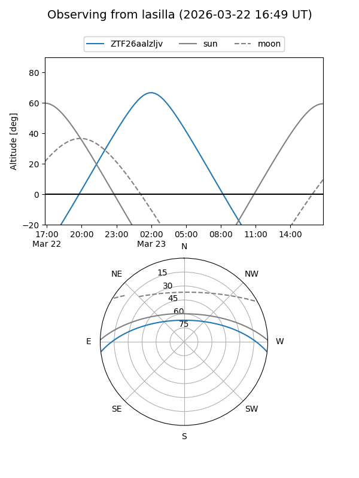
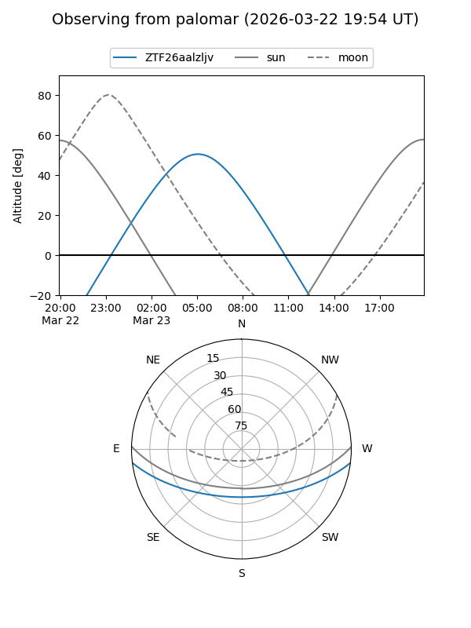

ZTF26aalzljv
Target ZTF26aalzljv at 2026-03-23 09:33
Aliases and brokers:
FINK: link
Lasair: link
ALeRCE: link
alt names
ZTF26aalzljv (ztf,fink_ztf)
Coordinates:
equatorial (ra, dec) = 139.2939,-5.94521
equatorial (HMS+DMS) = 09:17:10.55,-05:56:42.77
galactic (l, b) = (237.2455,+28.58708)
Flags:
Photometry:
last ztfg=19.63
1 ztfg detections
Lightcurve

Visibility


Additional plots